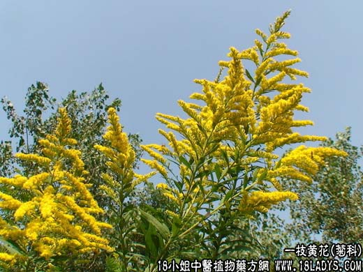

【中药概述】
一枝黄花为菊科植物一枝黄花的带根全草。辛、苦，凉。
1．疏风清热：用治感冒发热，咳嗽，可配贯众、鲜松针等同用；小儿惊风等。
2．解毒消肿：用于疮疡肿痛，痈肿，黄疸，毒蛇咬伤等。外用跌打损伤。
【药效鉴别】
一枝黄花疏散风热，清热解毒，消肿止痛，有抗菌抗病毒作用。
【临证应用】
1.上呼吸道感染、扁桃体炎、咽喉肿痛、支气管炎、肺炎、百日咳：一枝黄花9g，一点红6g，水煎服；
2.小儿喘息性支气管炎，一枝黄花，酢浆草各20g、地龙，枇杷叶各6g，水煎服。
【药理作用】
煎剂对金黄色葡萄球菌、肺炎球菌，绿脓杆菌等有不同程度的抑制作用。
【化学成分】
全草含酚性成分、鞣质、挥发油、皂甙、黄酮类等。
【用量用法】
9——15g，水煎服。
【使用注意】
口服后咽部麻辣等不适感，但大多数可在30～60分钟内消失。
泽兰的功效与作用
泽兰的价格
泽兰的中药药性详解